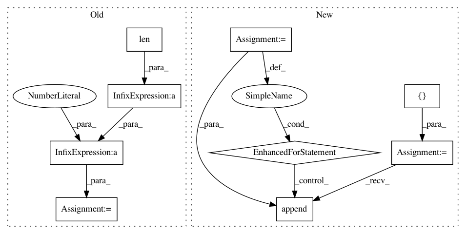

4b1f799c8403626ff56c7bf23fb1fbdb79dcb015,scanpy/plotting/_tools/__init__.py,,_rank_genes_groups_plot,#Any#Any#Any#Any#Any#Any#Any#Any#,258
Before Change
// make a list of tuples containing the index for the start gene and the
// end gene that should be labelled
group_positions = [(x, x + n_genes - 1) for x in range(0, n_genes * len(group_names), n_genes)]
// sum(list, []) is used to flatten the gene list
gene_names = sum([list(adata.uns[key]["names"][x][:n_genes]) for x in group_names], [])
After Change
gene_names = []
start = 0
group_positions = []
group_names_valid = []
for group in group_names:
// get all genes that are "not-nan"
genes_list = [gene for gene in adata.uns[key]["names"][group] if not pd.isnull(gene)][:n_genes]
if len(genes_list) == 0:
logg.warn("No genes found for group {}".format(group))
continue
gene_names.extend(genes_list)
end = start + len(genes_list)
group_positions.append((start, end -1))
group_names_valid.append(group)
start = end
group_names = group_names_valid
if plot_type == "dotplot":
from .._anndata import dotplot
dotplot(adata, gene_names, groupby, var_group_labels=group_names,
In pattern: SUPERPATTERN
Frequency: 3
Non-data size: 9
Instances
Project Name: theislab/scanpy
Commit Name: 4b1f799c8403626ff56c7bf23fb1fbdb79dcb015
Time: 2019-01-14
Author: fidel.ramirez@gmail.com
File Name: scanpy/plotting/_tools/__init__.py
Class Name:
Method Name: _rank_genes_groups_plot
Project Name: EpistasisLab/tpot
Commit Name: 11f6da12892d4222c1a9277150024d19b360e6ed
Time: 2015-11-11
Author: rso@randalolson.com
File Name: TPOT/TPOT.py
Class Name: TPOT
Method Name: evaluate_individual
Project Name: HazyResearch/fonduer
Commit Name: b4ec3ea5a927e5ff3736c180157d8a727b67107d
Time: 2018-09-20
Author: senwu@cs.stanford.edu
File Name: src/fonduer/candidates/mentions.py
Class Name: Ngrams
Method Name: apply